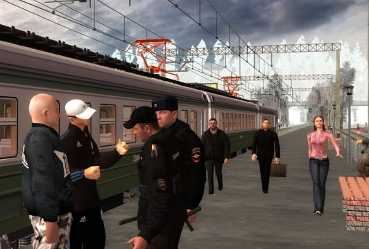
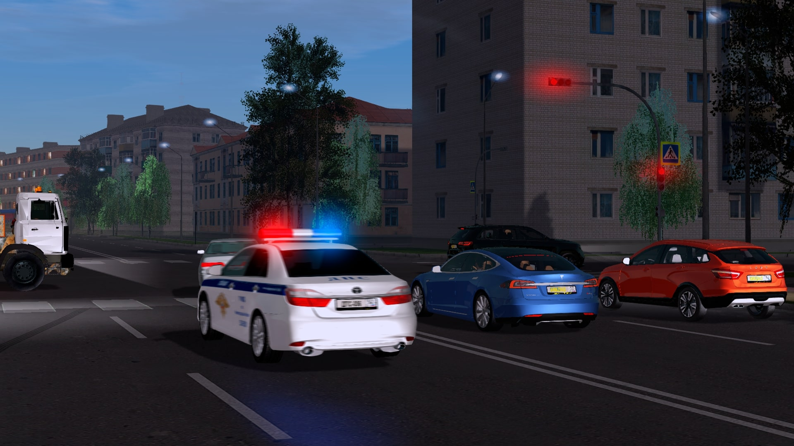
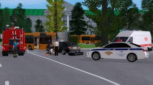
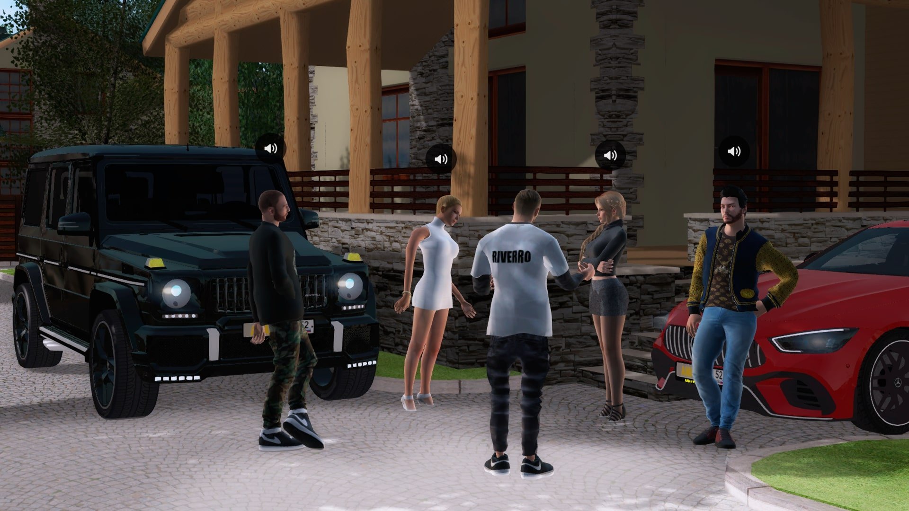
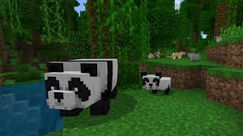
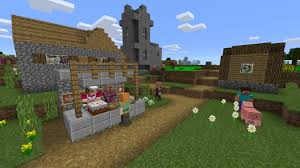
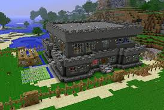
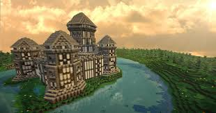

AMAZING RP
AMAZING RP - це дуже класний проект. На цьому проекті є дуже багато різних робіт. Наприклад: Дайвер. Суть цієї роботи діставати зі дна різні клади. На цьому проекті дуже круті обновлення. Одне з останніх оновленнь це дуже крутий івент СТАЛКЕР. У цього проекту є свій лаунчер. Ви можете вступити в любу організацію. Нижче будуть скріншоти з ігрі.
СКРІНШОТИ
   Minecraft
Досліджуйте безкінечні світи та будуйте що завгодно: від простих хижок до розкішних замків. Грайте у творчому режимі з необмеженими ресурсами або виберіть режим виживання, у якому вам доведеться видобувати ресурси, створювати зброю та обладунки для захисту від небезпечних мобів. Створюйте, досліджуйте та виживайте наодинці або з друзями, на мобільних пристроях або комп’ютерах із Windows 10. ПРОКАЧАЙТЕ ГРУ: Ринок. Відкрийте новий контент від спільноти на ринку! На вас чекають унікальні карти, скіни та пакети текстур від улюблених авторів. Консольні команди. Керуйте геймплеєм: роздавайте предмети, викликайте мобів, змінюйте час доби та багато іншого. Доповнення. Створіть власну атмосферу з безкоштовними доповненнями! Якщо ви любите програмувати, розробляйте нові пакети ресурсів, змінюючи ігрові процедури. МУЛЬТИПЛЕЄР Realms. Грайте з 10 друзями на будь-яких платформах, де й коли завгодно в Realms, на власному сервері, який ми вам надаємо. Спробуйте 30 днів безкоштовно в програмі. Мультиплеєр. Грайте онлайн з 4 друзями, які мають безкоштовний обліковий запис Xbox Live. Сервери. Підключайтеся до безкоштовних мережевих серверів і грайте з тисячами інших користувачів! Досліджуйте велетенські світи, якими керує спільнота, змагайтеся в унікальних міні-іграх та знаходьте нових друзів у чатах.
   